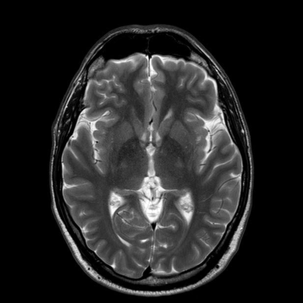

<!DOCTYPE html>
<html lang="en-gb">

</html>

<head>
    <link rel="stylesheet" href="css/bootstrap.css">
    <link rel="stylesheet" href="styles.css">
</head>

<body class="site-content">
    <div class="bg-image-toby no-gutters"></div>
    <nav class="navbar navbar-expand-lg navbar-light" style="background-color:#75bfea; filter: blur(0); z-index: 3;">
        <div class="container-fluid pl-5">
            <a class="navbar-brand" href="index.html">Home</a>
        </div>
        <a class="navbar-brand" href="Nathan.html">Nathan</a>
        <a class="navbar-brand" href="toby.html">Toby</a>
        <a class="navbar-brand" href="alex.html">Alex</a>
    </nav>
    <div class="container-fluid">
        <div class="row mt-5">
            <div class="col"></div>
            <div class="col-6 text-center main-content">
                <div class="my-5">
                    <h2 class="text-center">Positive impacts of machine learning:<span style="display:block; height: 25px;"></span></h2>
                    <p><a href="https://en.wikipedia.org/wiki/Machine_learning">Machine learning</a>, a sub-field of artificial intelligence, is a fast developing field in computer science.
                    Its uses appear to be myriad, and it is quickly evolving into a usable technology since Arthur Samuel coined the term in 1959 (1).</p>
                    <b>Medical imaging</b>
                    
                    <p>Machine learning algorithms, typically neural networks, have found a use as a diagnostic aid in medicine. Given that machine learning
                    is very successful at pattern recognition, it makes sense that it could be used to analyse scans of the human body to try to recognise certain conditions</p>
                    <p>For example, recently a <a href="https://physicsworld.com/a/machine-learning-makes-its-mark-on-medical-imaging-and-therapy/">team at the University of Wisconsin studied</a> the use of neural networks in diagnosing Alzheimer's based on images of brain scans.
                    They found that their model had an accuracy of 81%, with it working on unseen data. This is a good proof of concept that demonstrates machine learning's uses.</p>
                    <b>Driverless cars</b>
                    
                    <p>Recently, machine learning has found a commercial use as part of the many algorithms used in driverless cars. It is primarily used as a decision maker and as an object identifier.
                    It takes in the information from the various cameras around the car and attempts to identify the objects seen, and then makes decisions as to what the car should do based on the images.</p>
                    <p>Driverless cars still require a lot more development, yet the results are promising. Waymo, a company owned by Google, have found success over the last four years in a driverless taxi service in Pheonix and San Fransisco. Cars sold today have some level of autonomy as well,
                    typically having the ability to let drivers take their hands of the wheel when on a motorway as the car is able to keep lane and manage speed by itself.</p>
                    <p style="font-size: 10px">(1) Samuel, Arthur (1959). "Some Studies in Machine Learning Using the Game of Checkers". IBM Journal of Research and Development</p>
                    <p>Written by Toby Kerr <br>Github: <a href=https://github.com/TobyJK>TobyJK</a></p>
                </div>
            </div>
            <div class="col"></div>
        </div>
    </div>
    <script src="js/bootstrap.js"></script>
    <script src="js/jquery.slim.min.js"></script>
    <script src="js/jquery.backstretch.min.js"></script>
    <script>
        $("bg-image-toby").backstretch()
    </script>
</body>

</html>